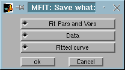

Version 4.2. (1999)
[ Set the output file ][ Save the results ][ Saving automatically ][ Mfit results file format ]
Saving data
Mfit allows you to save the results of your fitting. You can save the fit paramaters and uncertainties, but you can also save the fitted curve (to import into a graphing program for instance), and you can re-save your data. This last feature provides a convenient way to use Mfit's load functions to convert special format data to standard x, y, error column ascii format. that can be easily read by, for example, graphing and spreadsheet programs.Saving results
 Set the output file
Set the output file
Mfit appends saved data to the end of the current output file. The current output file name is displayed in the control window 'Output File' field:

Fig 1 : Mfit : control window
You can set the output file in one of three ways:
- Press the 'New...' button to the right of the output file name in the control window.
- Choose 'Set output file...' from the control window 'File' menu
- Edit the output file name displayed in the control window (this is quick, but you can't change directory)
If you use either of the first two methods, Mfit displays a dialog that lets you choose a directory and file. It looks something like this:

You can either select an existing file to which the saved information is appended, or enter a new file name, in which case a new output file is created.
Save the results
If you select the Press the 'Save...' item of the File menu in the Control window, this brings up a dialog like that below, which allows you to choose what to save.

You can check one or more options, then click ok.
- Fit parameters - save the fit parameters in standard Mfit format.
- Data - saves your data as a x, y, error ascii file
- Fitted curve - saves the fitted curve as an x,y ascii file. If the ‘Data’ button is not checked then the x limits and number of points can be specified in the boxes provided. If the ‘Data’ button is checked then the fitted curve is evaluated with the same x values as the data and saved with the data in a four-column x, y, error, fitted curve ascii file.
Pressing the 'Save' button at the bottom right corner of the Control window
will save results directly with whichever options are currently selected in the
‘Save what’ window.
Saving automatically
The 'AutoSave' feature enables to save automatically the fit results in
the active output file just before loading a new data file. This assumes that
the last parameter set is the good one, and all fit results of the fitting
session are stored in a single file. You can then use the Mfit parameter file
load routine to analyze these results.
 Back
to the Mfit user guide page
Back
to the Mfit user guide page
Mfit results file format
The Mfit results file format is designed to be complete and easily readable, both by you and by Mfit. In addition to the parameter values and errors, Mfit records the save date and time, the data file, the output file, the fit function, load function, and fit routine, and chi squared for the fit.
Example:
%MFIT Date 3.1.2000 Time 16:46:51
% Section : Vars -
Data : 006555 - Function : gauss .
DataFile
= 006555
DataDir
= /usr/illdata/data/in20/
FitFuncName
= Gaussian
FitFuncFile
= gauss
FitFuncDir
= /home/tas/matroot/matlab/funcs
OutFile
= temp.mft
OutDir
=
LoadRoutineName =
ILL data (new format) GUI
LoadRoutineFile =
illgui
LoadRoutineDir
= /home/tas/matroot/matlab/load
FitRoutineName
= Levenberg Marquardt gradient (Fast)
FitRoutineFile
= mf_flsqr
FitRoutineDir
= /home/tas/matroot/matlab/nllsq
% [006555] is :
[A4 T=0.00 K (mn=50.0)] versus [CNTS (per 1 Mon)*1].
load
% Section :
Parameters (4) - Data : 006555 - Function : gauss .
par 1
Amplitude 4.127740e+01 3.661250e+00 0
par 2
Centre 5.602750e+01
3.606060e-02 0
par 3
Width 2.595580e-01
2.926780e-02 0
par 4
Background 9.725880e+00 0.000000e+00 1
% CorCoef 0.317 --
RV 4.249 -- ChiSq 4.957 -- Q ChiSq 0.000
% Section : Data
(21)- Data : 006555 - Function : gauss .
%
x
y
err:y yfit
5.460100e+01
1.500000e+01 3.872983e+00 9.725891e+00
5.470500e+01
9.000000e+00 3.000000e+00 9.725975e+00
5.479800e+01
1.300000e+01 3.605551e+00 9.726434e+00
5.529800e+01
3.400000e+01 5.830952e+00 1.052099e+01
5.540300e+01
2.600000e+01 5.099020e+00 1.200974e+01
5.550100e+01
4.800000e+01 6.928203e+00 1.500107e+01
5.559500e+01
4.100000e+01 6.403124e+00 2.002488e+01
5.570500e+01
6.100000e+01 7.810250e+00 2.880159e+01
5.579800e+01 4.300000e+01
6.557439e+00 3.764786e+01
5.589700e+01
5.100000e+01 7.141428e+00 4.610236e+01
5.600100e+01
4.900000e+01 7.000000e+00 5.078871e+01
5.610000e+01
5.000000e+01 7.071068e+00 4.942405e+01
5.619900e+01
4.700000e+01 6.855655e+00 4.290854e+01
5.629800e+01
2.900000e+01 5.385165e+00 3.370708e+01
5.640200e+01
2.700000e+01 5.196152e+00 2.430259e+01
5.649600e+01
2.200000e+01 4.690416e+00 1.782146e+01
5.660000e+01
1.700000e+01 4.123106e+00 1.335075e+01
5.669900e+01
1.700000e+01 4.123106e+00 1.117912e+01
5.679800e+01
2.000000e+01 4.472136e+00 1.022962e+01
5.690200e+01
1.100000e+01 3.316625e+00 9.867387e+00
5.699600e+01
1.400000e+01 3.741657e+00 9.764999e+00
% End of Data 21
lines, 4 columns
The format for the parameters is parameter number, parameter name, value, and uncertainty. An uncertainty of 0 indicates that the paramter was fixed during the fit. This information is also given by the last column (0 : free, 1 : fixed).
Mfit results files are also batch files. You can run them by clicking the 'Batch' button in the control window.
See also: Mfit batch files , Mfit parameter file load
routine
 Back
to the Mfit user guide page
Back
to the Mfit user guide page
Back to ILL/TAS
Matlab Page